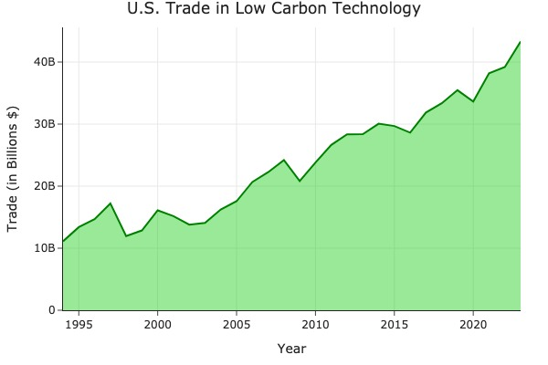
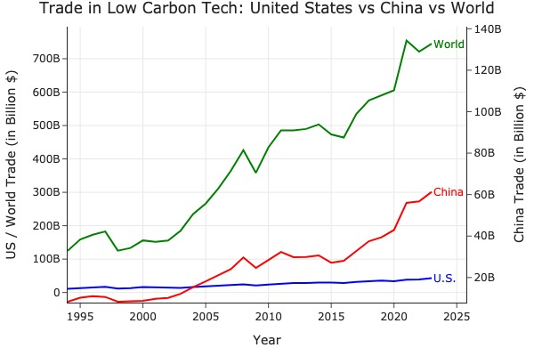

Proposition: The United States is making signifcant progress in Low-Carbon Technology Trade globally!
FOR the Proposition

Design Decisions and Rationale:
- Line Chart Emphasizes Upward Momentum : A line (area) chart was chosen to highlight continuous year-over-year growth. Its slope naturally draws the eye upward, reinforcing the idea of steady progress in U.S. low-carbon technology trade.
- Green Color Reinforces Environmental Framing : The green fill color subtly signals environmental friendliness and sustainability, aligning visually with the “low-carbon” theme and making the trend feel more positive, even without showing performance relative to other countries.
- Isolating U.S. Data Avoids Undermining the Message : By showing only the U.S. in isolation, the chart avoids comparisons that might diminish its growth. This frames the narrative as progress, rather than prompting viewers to question how the U.S. stacks up globally.
AGAINST the Proposition

Design Decisions and Rationale:
- Including the U.S. and the World Shows Relative Insignificance : By plotting the U.S. and world trade together on the same scale, the chart reveals how small the U.S. contribution is within the global low-carbon tech trade. This contrast undercuts any claim of U.S. leadership, despite its individual growth.
- China on a Separate Axis Exaggerates Its Growth : Placing China on a secondary y-axis allows its line to rise sharply alongside the world’s — creating the illusion that China’s trade is nearly equivalent to or exceeding global totals, which is deceptive. This visual choice distorts proportion while staying numerically accurate.
- Color Use Guides Viewer Perception : The U.S. is shown in muted blue, while China is in bold red and the world in vivid green. This color hierarchy draws attention away from the U.S. and toward China and the world, visually diminishing the U.S. role and reinforcing the opposition stance.
Final Reflection
[WRITE FINAL REFLECTION PARAGRAPHS HERE.]